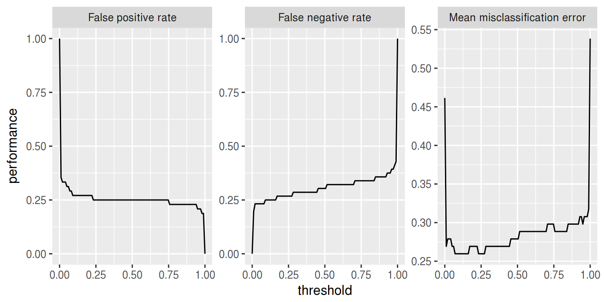

The quality of the predictions of a model in [%mlr] can be assessed with respect to a number of different performance measures. In order to calculate the performance measures, call [&performance] on the object returned by predict and specify the desired performance measures.
[%mlr] provides a large number of performance measures for all types of learning problems. Typical performance measures for classification are the mean misclassification error (mmce), accuracy (acc) or measures based on ROC analysis. For regression the mean of squared errors (mse) or mean of absolute errors (mae) are usually considered. For clustering tasks, measures such as the Dunn index (dunn) are provided, while for survival predictions, the Concordance Index (cindex) is supported, and for cost-sensitive predictions the misclassification penalty (mcp) and others. It is also possible to access the time to train the learner (timetrain), the time to compute the prediction (timepredict) and their sum (timeboth) as performance measures.
To see which performance measures are implemented, have a look at the table of performance measures and the [&measures] documentation page.
If you want to implement an additional measure or include a measure with non-standard misclassification costs, see the section on creating custom measures.
The properties and requirements of the individual measures are shown in the table of performance measures.
If you would like a list of available measures with certain properties or suitable for a certain learning [&Task] use the function [&listMeasures].
## Performance measures for classification with multiple classes
listMeasures("classif", properties = "classif.multi")## [1] "kappa" "multiclass.brier" "multiclass.aunp"
## [4] "multiclass.aunu" "qsr" "ber"
## [7] "logloss" "wkappa" "timeboth"
## [10] "timepredict" "acc" "lsr"
## [13] "featperc" "multiclass.au1p" "multiclass.au1u"
## [16] "ssr" "timetrain" "mmce"## Performance measure suitable for the iris classification task
listMeasures(iris.task)## [1] "kappa" "multiclass.brier" "multiclass.aunp"
## [4] "multiclass.aunu" "qsr" "ber"
## [7] "logloss" "wkappa" "timeboth"
## [10] "timepredict" "acc" "lsr"
## [13] "featperc" "multiclass.au1p" "multiclass.au1u"
## [16] "ssr" "timetrain" "mmce"For convenience there exists a default measure for each type of learning problem, which is calculated if nothing else is specified. As defaults we chose the most commonly used measures for the respective types, e.g., the mean squared error (mse) for regression and the misclassification rate (mmce) for classification. The help page of function [&getDefaultMeasure] lists all defaults for all types of learning problems. The function itself returns the default measure for a given task type, [&Task] or [&Learner].
## Get default measure for iris.task
getDefaultMeasure(iris.task)## Name: Mean misclassification error
## Performance measure: mmce
## Properties: classif,classif.multi,req.pred,req.truth
## Minimize: TRUE
## Best: 0; Worst: 1
## Aggregated by: test.mean
## Arguments:
## Note: Defined as: mean(response != truth)## Get the default measure for linear regression
getDefaultMeasure(makeLearner("regr.lm"))## Name: Mean of squared errors
## Performance measure: mse
## Properties: regr,req.pred,req.truth
## Minimize: TRUE
## Best: 0; Worst: Inf
## Aggregated by: test.mean
## Arguments:
## Note: Defined as: mean((response - truth)^2)In the following example we fit a gradient boosting machine on a subset of the BostonHousing data set and calculate the default measure mean squared error (mse) on the remaining observations.
n = getTaskSize(bh.task)
lrn = makeLearner("regr.gbm", n.trees = 1000)
mod = train(lrn, task = bh.task, subset = seq(1, n, 2))
pred = predict(mod, task = bh.task, subset = seq(2, n, 2))
performance(pred)## mse
## 42.81077The following code computes the median of squared errors (medse) instead.
performance(pred, measures = medse)## medse
## 9.011062Of course, we can also calculate multiple performance measures at once by simply passing a list of measures which can also include your own measure.
Calculate the mean squared error, median squared error and mean absolute error (mae).
performance(pred, measures = list(mse, medse, mae))## mse medse mae
## 42.810766 9.011062 4.552955For the other types of learning problems and measures, calculating the performance basically works in the same way.
Note that in order to calculate some performance measures it is required that you pass the [&Task] or the fitted model in addition to the [&Prediction].
For example in order to assess the time needed for training (timetrain), the fitted model has to be passed.
performance(pred, measures = timetrain, model = mod)## timetrain
## 0.066For many performance measures in cluster analysis the [&Task] is required.
lrn = makeLearner("cluster.kmeans", centers = 3)
mod = train(lrn, mtcars.task)
pred = predict(mod, task = mtcars.task)
## Calculate the Dunn index
performance(pred, measures = dunn, task = mtcars.task)## dunn
## 0.1462919Moreover, some measures require a certain type of prediction. For example in binary classification in order to calculate the AUC (auc) – the area under the ROC (receiver operating characteristic) curve – we have to make sure that posterior probabilities are predicted. For more information on ROC analysis, see the section on ROC analysis.
lrn = makeLearner("classif.rpart", predict.type = "prob")
mod = train(lrn, task = sonar.task)
pred = predict(mod, task = sonar.task)
performance(pred, measures = auc)## auc
## 0.9224018Also bear in mind that many of the performance measures that are available for classification, e.g., the false positive rate (fpr), are only suitable for binary problems.
Performance measures in [%mlr] are objects of class Measure. If you are interested in the properties or requirements of a single measure you can access it directly. See the help page of Measure for information on the individual slots.
## Mean misclassification error
str(mmce)## List of 10
## $ id : chr "mmce"
## $ minimize : logi TRUE
## $ properties: chr [1:4] "classif" "classif.multi" "req.pred" "req.truth"
## $ fun :function (task, model, pred, feats, extra.args)
## ..- attr(*, "srcref")=Class 'srcref' atomic [1:8] 464 9 466 3 9 3 26960 26962
## .. .. ..- attr(*, "srcfile")=Classes 'srcfilealias', 'srcfile' <environment: 0x55866287cc80>
## $ extra.args: list()
## $ best : num 0
## $ worst : num 1
## $ name : chr "Mean misclassification error"
## $ note : chr "Defined as: mean(response != truth)"
## $ aggr :List of 4
## ..$ id : chr "test.mean"
## ..$ name : chr "Test mean"
## ..$ fun :function (task, perf.test, perf.train, measure, group, pred)
## .. ..- attr(*, "srcref")=Class 'srcref' atomic [1:8] 43 9 43 83 9 83 19016 19016
## .. .. .. ..- attr(*, "srcfile")=Classes 'srcfilealias', 'srcfile' <environment: 0x558661d21938>
## ..$ properties: chr "req.test"
## ..- attr(*, "class")= chr "Aggregation"
## - attr(*, "class")= chr "Measure"For binary classification specialized techniques exist to analyze the performance.
As you may recall (see the previous section on making predictions) in binary classification we can adjust the threshold used to map probabilities to class labels. Helpful in this regard is are the functions [&generateThreshVsPerfData] and [&plotThreshVsPerf], which generate and plot, respectively, the learner performance versus the threshold.
For more performance plots and automatic threshold tuning see here.
In the following example we consider the Sonar data set and plot the false positive rate (fpr), the false negative rate (fnr) as well as the misclassification rate (mmce) for all possible threshold values.
lrn = makeLearner("classif.lda", predict.type = "prob")
n = getTaskSize(sonar.task)
mod = train(lrn, task = sonar.task, subset = seq(1, n, by = 2))
pred = predict(mod, task = sonar.task, subset = seq(2, n, by = 2))
## Performance for the default threshold 0.5
performance(pred, measures = list(fpr, fnr, mmce))## fpr fnr mmce
## 0.2500000 0.3035714 0.2788462## Plot false negative and positive rates as well as the error rate versus the threshold
d = generateThreshVsPerfData(pred, measures = list(fpr, fnr, mmce))
plotThreshVsPerf(d)
There is an experimental [%ggvis] plotting function [&plotThreshVsPerfGGVIS] which performs similarly to [&plotThreshVsPerf] but instead of creating facetted subplots to visualize multiple learners and/or multiple measures, one of them is mapped to an interactive sidebar which selects what to display.
plotThreshVsPerfGGVIS(d)For binary classification a large number of specialized measures exist, which can be nicely formatted into one matrix, see for example the receiver operating characteristic page on wikipedia.
We can generate a similiar table with the [&calculateROCMeasures] function.
r = calculateROCMeasures(pred)
r## predicted
## true M R
## M 39 17 tpr: 0.7 fnr: 0.3
## R 12 36 fpr: 0.25 tnr: 0.75
## ppv: 0.76 for: 0.32 lrp: 2.79 acc: 0.72
## fdr: 0.24 npv: 0.68 lrm: 0.4 dor: 6.88
##
##
## Abbreviations:
## tpr - True positive rate (Sensitivity, Recall)
## fpr - False positive rate (Fall-out)
## fnr - False negative rate (Miss rate)
## tnr - True negative rate (Specificity)
## ppv - Positive predictive value (Precision)
## for - False omission rate
## lrp - Positive likelihood ratio (LR+)
## fdr - False discovery rate
## npv - Negative predictive value
## acc - Accuracy
## lrm - Negative likelihood ratio (LR-)
## dor - Diagnostic odds ratioThe top left \(2 \times 2\) matrix is the confusion matrix, which shows the relative frequency of correctly and incorrectly classified observations. Below and to the right a large number of performance measures that can be inferred from the confusion matrix are added. By default some additional info about the measures is printed. You can turn this off using the abbreviations argument of the print method: print(r, abbreviations = FALSE).